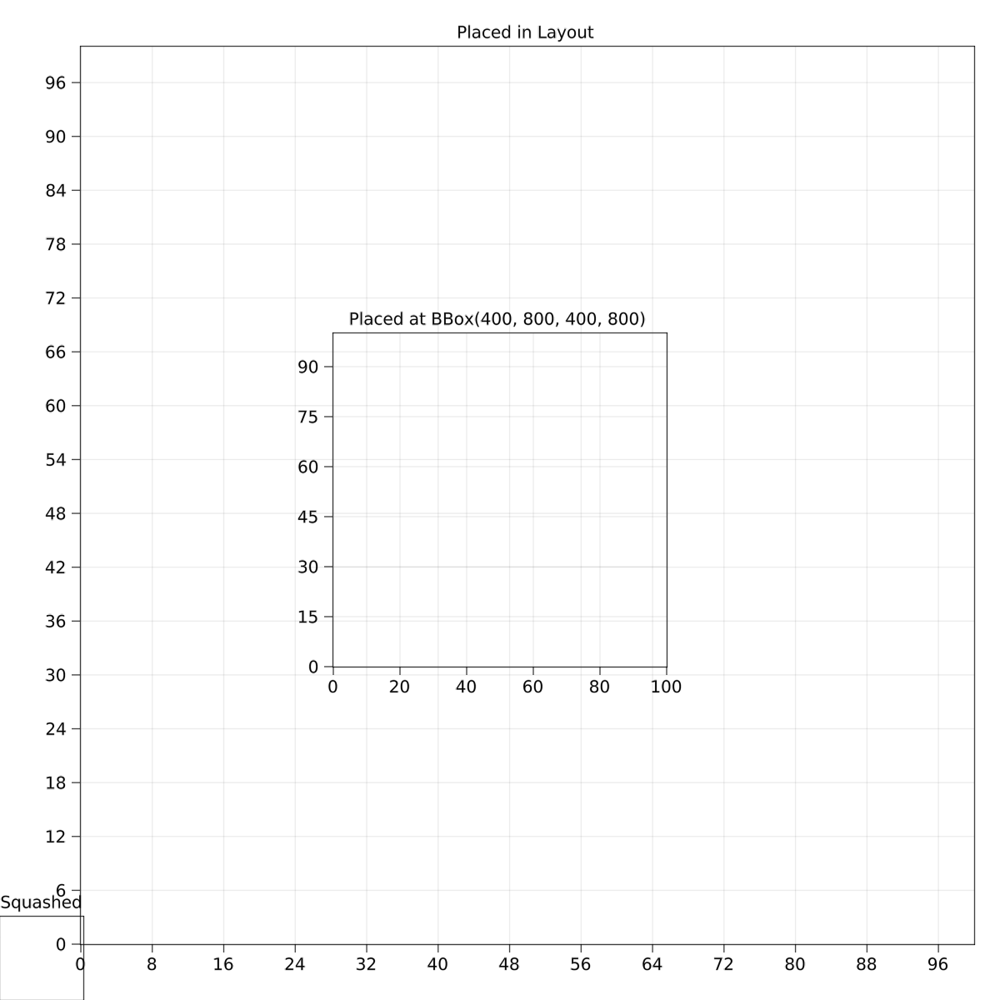
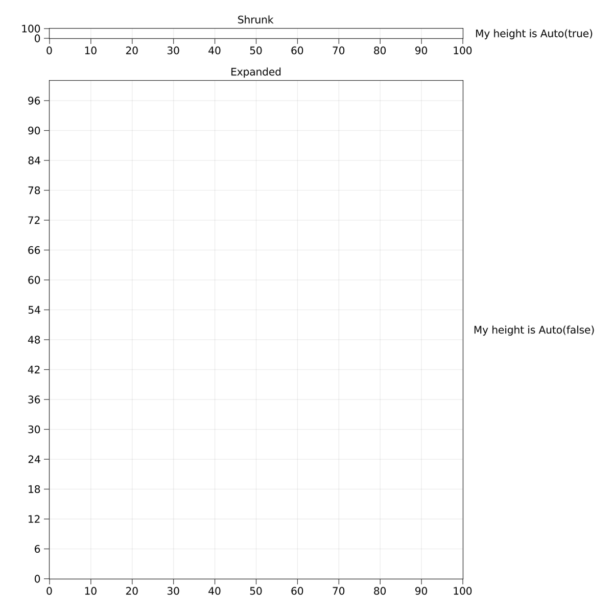

Elements are squashed into the lower left corner
Layoutable elements require a bounding box that they align themselves to. If you place such an element in a layout, the bounding box is controlled by that layout. If you forget to put an element in a layout, it will have its default bounding box of BBox(0, 100, 0, 100) which ends up being in the lower left corner. You can also choose to specify a bounding box manually if you need more control.
using Makie
using MakieLayout
scene, layout = layoutscene(resolution = (1200, 1200))
ax1 = LAxis(scene, title = "Squashed")
ax2 = layout[1, 1] = LAxis(scene, title = "Placed in Layout")
ax3 = LAxis(scene, bbox = BBox(400, 800, 400, 800),
title = "Placed at BBox(400, 800, 400, 800)")[ Info: Caching fonts, this may take a while. Needed only on first run!
Columns or rows are shrunk to the size of Text or another element
Columns or rows that have size Auto(true) try to determine the width or height of all single-spanned elements that are placed in them, and if any elements report their size the row or column will shrink to the maximum reported size. This is so smaller elements with a known size take as little space as needed. But if there is other content in the row that should take more space, you can give the offending element a size of Auto(false). This way, its own size can be determined automatically, but it doesn't report that to the row or column. Alternatively, you can set the size of that row or column to Auto(false) (or any other value than Auto(true)).
using Makie
using MakieLayout
scene, layout = layoutscene(resolution = (1200, 1200))
layout[1, 1] = LAxis(scene, title = "Shrunk")
layout[2, 1] = LAxis(scene, title = "Expanded")
layout[1, 2] = LText(scene, "My height is Auto(true)", height = Auto(true))
layout[2, 2] = LText(scene, "My height is Auto(false)", height = Auto(false))